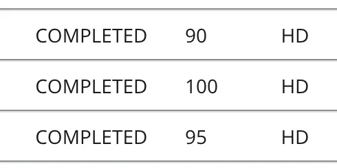

Unteachable and the Art of Becoming

November 01, 2024
A thoughtful meditation on growth and resolve.
Results week anticipation was a slow burn—a month of waiting, with each passing day adding to the anxieties that only a student awaiting their results could understand. In a world that often values quantifiable results, this number seemed to hold such power, as if it could substantiate intelligence, effort, or even a sense of belonging.
As I received the results from Discrete Mathematics, shared on LinkedIn, I was promptly reminded of my younger self, a version of me who adored English yet couldn’t seem to grasp mathematics. This unassailable wall, my “nightmare subject” that couldn’t possibly play a role in my education in future. I imagine she may have even laughed at the fact I had “received a maths result” and was feeling excited about it rather than pure dread. A mixture of logic and precision seemed impossible for someone so entangled in abstract concepts and literary ideas so much so that I believed my brain was simply at odds with it.
My aversion wasn’t carried from childhood, but rather something I have developed almost as a defence mechanism, or out of spite, to avoid a sense of failure from a subject I ‘didn’t understand’. There was, in fact, one particular experience that solidified my withdrawal from maths, a moment in which I had developed an evolutionary switch to tune out any discussion of numbers and equations.
I often think back to that year, Year 10 where the limits to my patience and self-belief were constantly being pushed. I do admit that it was a mix of things that lead to my pessimistic mindset, one being my own stubborn resistance, and all the casual distractions I occupied my time, showcasing a student with a lack of interest, never potential. At this point, my habits had led me to fall behind in my understanding yet rather than take accountability, I simply sat at the back of the classroom, laptop open, laughing quietly with friends. Yes, I was THAT classmate. Guilty.
I understand why my teacher had his frustrations towards me, as I wasn’t exactly a model student. However, halfway through the year, a change took place. I knew deep down within my heart that I wanted to take a different approach, and finally try! Inspired by the efforts I was putting into both my English and Arts subjects, I wanted to stop hiding behind a nonchalant attitude. I packed up my desk, and moved to a table at the front of the class, hoping I could still catch an opportunity to immerse myself in the lessons.
There was a moment that has lingered with me going on 10 years now, whereby in my struggling efforts to catch-up, I had asked my teacher for help. I was told that I “should already know this”, and I “should know better”, and just like that I had a door closed in my face—a definitive answer to a question I didn’t even know I had asked about how he viewed me. Not as a student, but a lost cause.
“Maybe I am too far behind”, I thought. “Maybe I’ve lost the right to be taught.”
There had never been a single moment that has stayed with me for so long, and for years I let myself believe that I was ‘unteachable’ in maths, that my brain simply could not comprehend it. With this experience, I created a self-imposed limitation purely born out of a story with a sour ending and avoided maths altogether. And so, I engrossed myself in Literature and my love for language where I felt at home and where my efforts felt appreciated and acknowledged.
Reflecting on this journey and the release of my results, I came to realise something profound about this entire experience: no one is truly ‘unteachable’. The labels we place on ourselves, or worse— the labels placed on us by others— do not define what we are truly capable of achieving. It took me ten years to conclude that my teacher’s words, whilst harmful, did not determine my abilities. It is simply one perspective that I had perhaps internalised way too quickly. It is due to the guidance and support from the Deakin University mathematics department that allowed me to break free from these limitations.
What I’ve learnt is that being ‘unteachable’ is simply a myth, a construct that holds people back from realising their true potential. Learning has always been a combination of persistence, and self-belief, and accepting the help that we need. Our progress as life-long learners is often energised by the support of others, and especially by those who see our potential even when we begin to doubt ourselves.
In many beautiful ways, this result represents more than just a grade, or a number on a screen; its a testament to a journey of being ‘unteachable’ to flourishing into an active learner. It illustrates that even subjects that may seem out of reach CAN be learned with the right mindset and the right people around to guide you.
And perhaps most importantly, my story speaks to the role educators play in shaping both the mindset, and paths of students. A single dismissive comment can sting for years, fostering self-doubt and hesitation. But a single moment of encouragement from a passionate team can just as easily become a turning point, a flicker of a spark that ignites curiosity and resilience.
So, to my younger self, and to anyone else who has got this far: you are teachable, and you always were. Our limitations are only as strong as the belief we place in them. Embrace the art of becoming, and remind yourself that every experience holds a valuable lesson, even if it takes years to realise it.